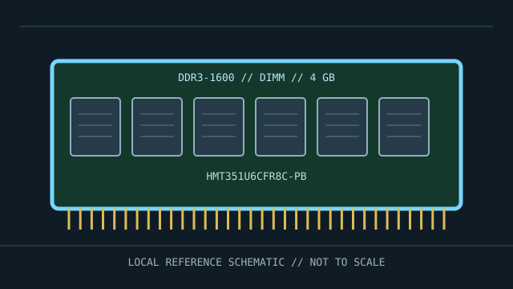

[ MANUFACTURER MODEL // MEMORY / RAM ]
SK hynix HMT351U6CFR8C-PB
A model-specific DDR3-1600 memory module identified by manufacturer part number HMT351U6CFR8C-PB. This record distinguishes the exact product from generation-wide module standards; subrevision, SPD, and platform qualification remain specimen-specific.

EXACT ID: SK hynix HMT351U6CFR8C-PB. Do not infer undocumented traits from the SKU alone; verify the label, full suffix, SPD and revision before service or compatibility decisions.
Model specifications
| Manufacturer / part ID | SK hynix HMT351U6CFR8C-PB |
|---|---|
| Module class | Unbuffered, non-ECC DDR3 module; 240-pin desktop UDIMM |
| Capacity / data rate | 4 GB; 1600 MT/s (PC3-12800) |
| Timing / voltage | CL11, JEDEC; nominal module voltage 1.5 V. Profile-dependent rates are identified where applicable; JEDEC fallback behavior may be slower. |
| Interface / organization | DDR3-1600, 240 contacts; 2Rx8. Pin count does not determine electrical compatibility: generation keying and module buffering/ECC class must match. |
| Platform and bus compatibility | DDR3 desktop platforms that support 4 GB DIMMs and this device organization; not suitable for ECC/RDIMM-only servers. |
| Variant boundary | Specifications describe this full SKU as listed by its maker; manufacturers may change chips, ranks, SPD tables, or component revisions without changing the retail family. Preserve evidence for the actual specimen. |
Compatibility, service & archive notes
- DDR3 desktop platforms that support 4 GB DIMMs and this device organization; not suitable for ECC/RDIMM-only servers.
- Before installation, compare motherboard/server service manual, CPU memory-controller support, BIOS/BMC version, supported capacity per slot, rank/density, channel population and the required ECC/buffering class. Similar pin count or physical fit is not proof of compatibility.
- Shut the host down and disconnect standby power as the service manual directs. Use ESD controls, handle the module by its edges, keep contacts clean, and never force a notched module. Observe platform-specific discharge and battery procedures.
- Do not mix UDIMM, RDIMM and LRDIMM in a memory channel unless the platform explicitly documents such a combination. ECC support depends on the CPU, board wiring, firmware and module type. DDR5 on-die ECC is not system-level ECC.
Preservation record
Photograph the label and notch, transcribe the full part number and date/revision code, save a read-only SPD dump, note channel/slot and host configuration, and record BIOS/BMC, operating rate, voltage/profile, memory test method and any ECC/error-counter results. Store removed modules in ESD-safe packaging.
Manufacturer & standards references
- SK hynix HMT351U6CFR8C-PB datasheet (archived mirror)Archived copy keyed to this full module part number; verify any specimen against its label and SPD.
- SK hynix official downloads portalPrimary manufacturer source; search the exact SKU for current product documents and revisions.
- JEDEC JESD79-3 — DDR3 SDRAMGeneration-level interface and electrical context. A standard does not establish a host's support for this capacity, rank, ECC, buffering, or profile.
Check the platform manufacturer’s service manual and qualified-memory list for final validation; saved module SPD and a physical label are the best archival evidence for an individual specimen.